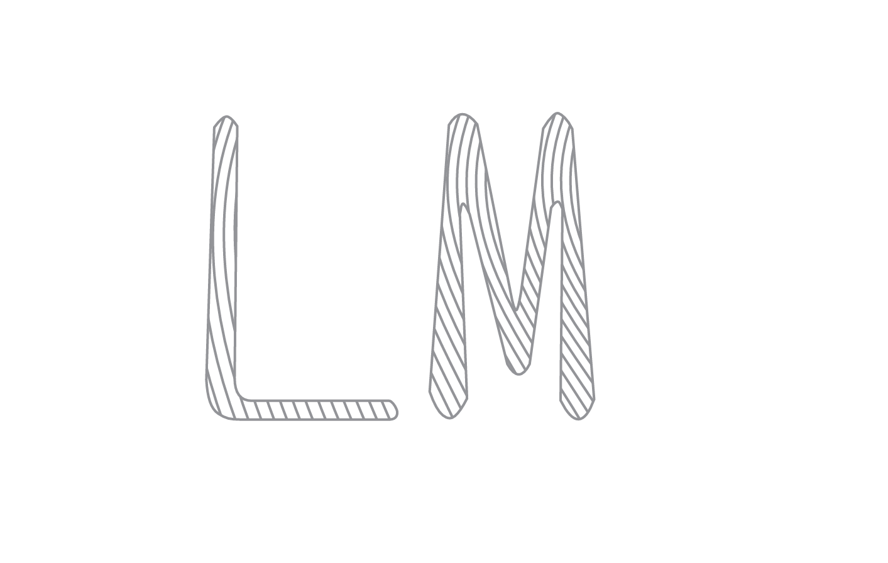
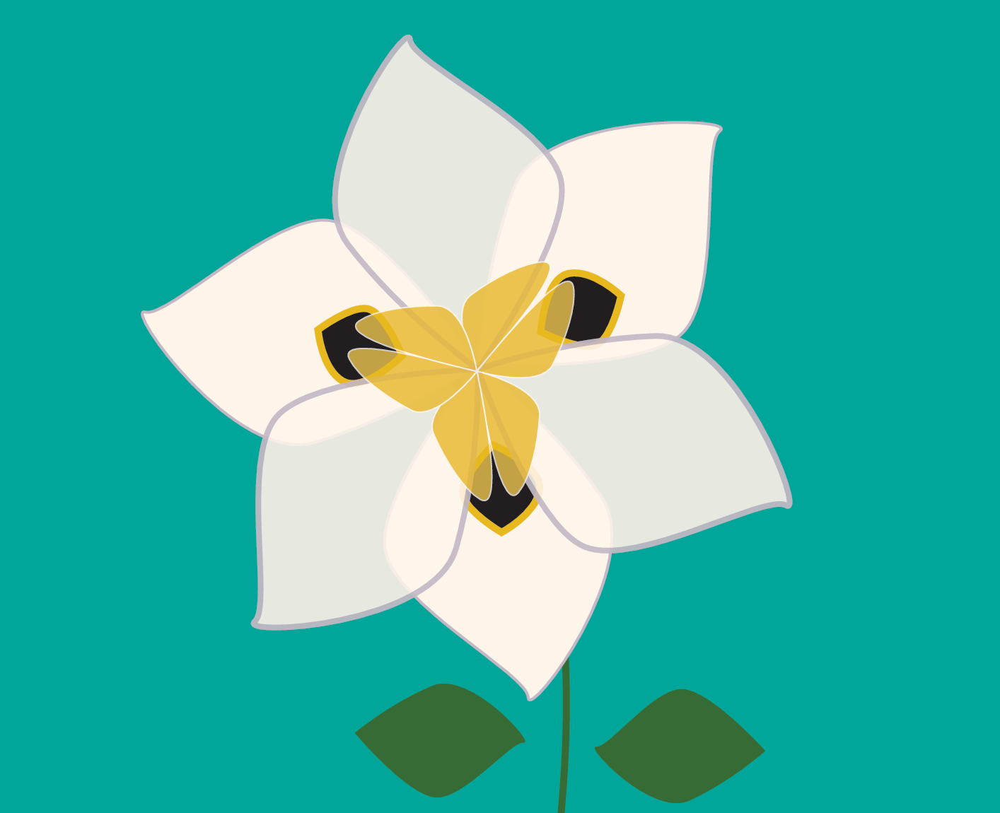
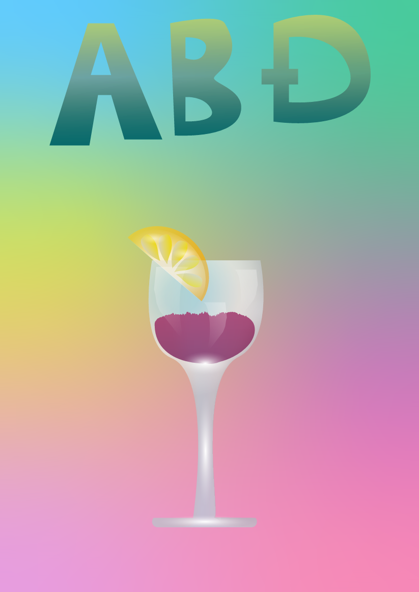
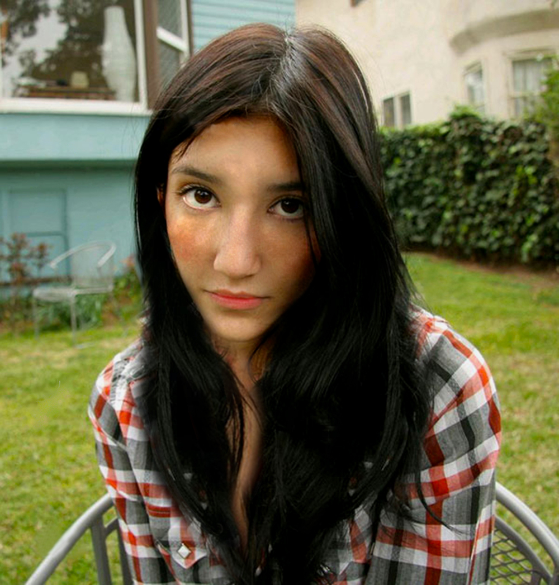
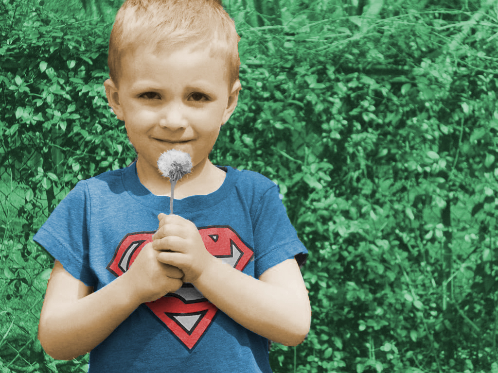
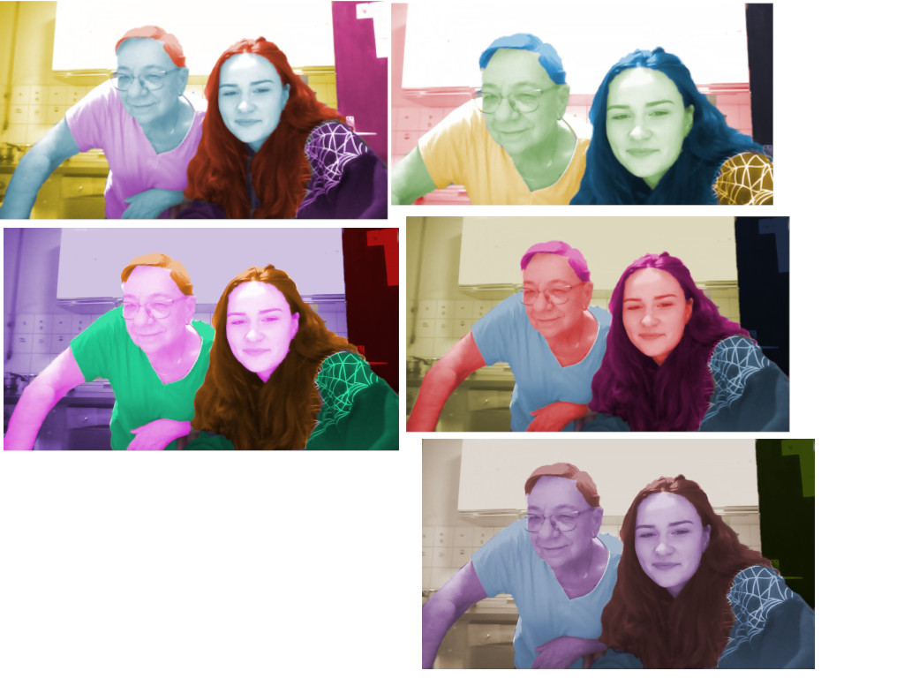
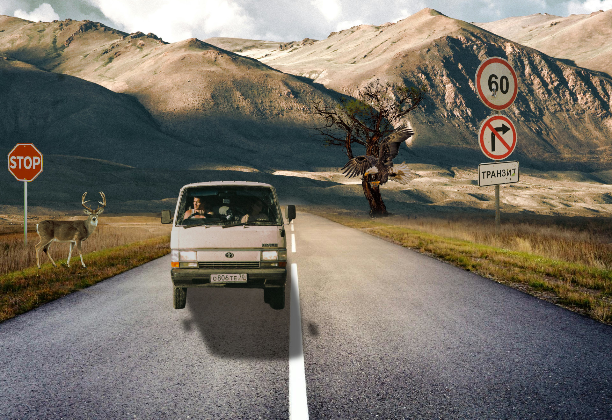
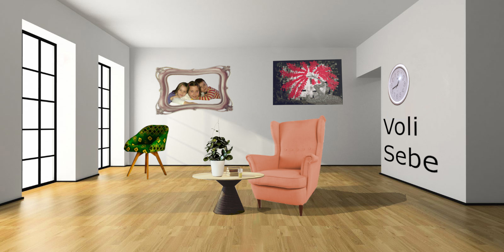

Cilj ove vježbe je bio izraditi i dizajnirati funkcionalan font. Font koji sam izradila sam stavila kao zadani font na početnoj stranici u naslovu Lucija Mrnjec
.
U ovom zadatku morali smo pomoću prikladnih alata nacrtati Bezierovu krivulju. Bezierova krivulja je parametarska krivulja definirana sa 4 točke i predstavlja temelj današnje vektorske grafike .

Na drugoj stranici ovog dokumenta izvela sam vlastiti primjer s multipliciranim objektima koje sam nacrtala pomoću alata Pen. Objete sam kreirala tako što sam iscrtavao konture prema odabranoj slici predloška po vlastitom izboru ili sam ih slobodno nacrtala bez predloška. Kopirala sam oblike više puta koristeći tipku Alt (Duplicate), te sam im dodala različite boje iz nove Color grupe (Swatch) koju sam kreirala sa barem pet novih boja. Primijenila sam rotacije, skaliranje, transparenciju i multipliciranje oblika.
U ovoj vježbi radim na izradi složenih objekata koji se sastoje od više staza. Koristim metode kao što su spajanje (Unite/Compound path) ili oduzimanje oblika (Difference/Subtract). Primjenjujem različite vrste gradijenata – linearne, radijalne, i mesh – s najmanje dvije boje. Uvježbavam i upotrebu transparencije te raspored slojeva kako bih stvorila kompleksnu grafiku.
Ova vježba je služila kao upoznavanje s gimp/ photoshop alatima za retuširanje. Zadatak je bio maknuti nepravilnosti na zadanoj slici te predati je na Merlin

U vježbi prolazim kroz tehnike neinvazivnog koloriranja slike koje se mogu primijeniti na crno-bijele slike ili slike u boji kojima želim promijeniti nijansu određenih područja. Selektiram željene dijelove slike kako bih stvorila maske kojima skrivam ili otkrivam efekte kolorizacije. Boja se aplicira na zaseban sloj kako ne bih uništila originalne tonove i kako bih mogla lakše napraviti promjene u kasnijim fazama obrade slike. Selekcije izvodim i popravljam ručno kako bih što preciznije izdvojila željenu boju iz pozadine, jer o tome najviše ovisi kvaliteta slike.
 Glavni cilj fotomontaže je kombiniranje više fotografija izrezivanjem dijelova različitih slika i spajanjem u jednu cjelinu. Pritom je najvažnije kvalitetno selektirati dijelove koje želim izrezati kako bi se što bolje uklopili u finalnu sliku. U ovoj vježbi prolazim kroz različite tehnike selektiranja jednostavnih i složenih oblika. Jednostavne tehnike selekcije uključuju alate kojima selektiram poligone i oštre rubove objekata, a složenije tehnike selekcije podrazumijevaju selekciju putem kanala slike ili crtanje maski brush i eraser alatima u modu quick mask. Vježba se bavi i izradom i uklapanjem sjena objekata koje sam uvezla izrezivanjem i korekcijom boja kako bih pojačala dojam realističnosti.
Cilj ovog projektnog zadatka bio je ukomponirati objekte u smislenu sliku te ih obraditi po uputama.
U zadatku su bile upute koje smo trebali pratiti za izradu gif-a u programu Adobe Premiere Pro. Korisitili smo se i photoshopom za izradu kvalitetnije slike


Premiere Pro se koristi i u svrhu izrade video uradtka. U prvom dijelu zadatka trebali smo pratiti video upute te se upoznati s alatima potrebnim za izradu videa. U drugom djelu smo dobili slobodu napraviti naš video.